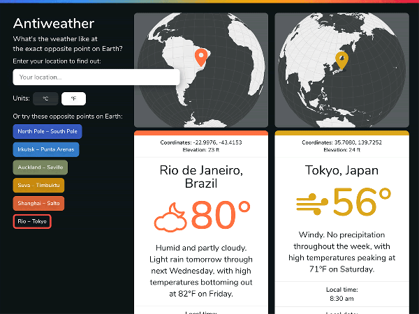
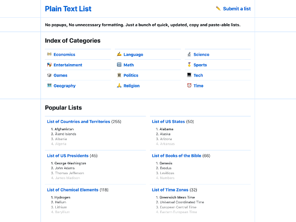
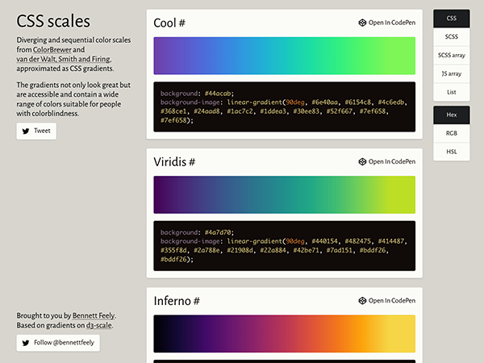

Recent Work
 The Open Brain Project, at Carnegie Mellon University
The Open Brain Project, at Carnegie Mellon University Soteria Radar, a website for a startup
Soteria Radar, a website for a startup Genesis Marriage, a website for the Archdiocese of Cincinnati
Genesis Marriage, a website for the Archdiocese of Cincinnati
Recent Personal Projects
 YouTube Decade, watch the most viewed videos posted exactly ten years ago
YouTube Decade, watch the most viewed videos posted exactly ten years ago Clippy, a tool for making CSS clip paths
Clippy, a tool for making CSS clip paths- Antiweather, see what the weather's like on the other side of the world
 CSS Image Effects, using blend modes for complex image effects
CSS Image Effects, using blend modes for complex image effects- Plain Text List, quick copy and pasteable lists
 Flexplorer, learn how flexbox works with lists
Flexplorer, learn how flexbox works with lists- CSS Scales, accessible CSS gradients